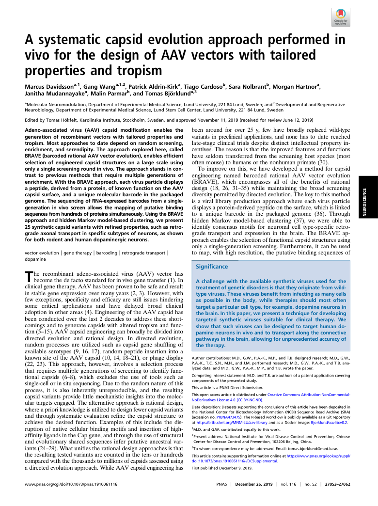
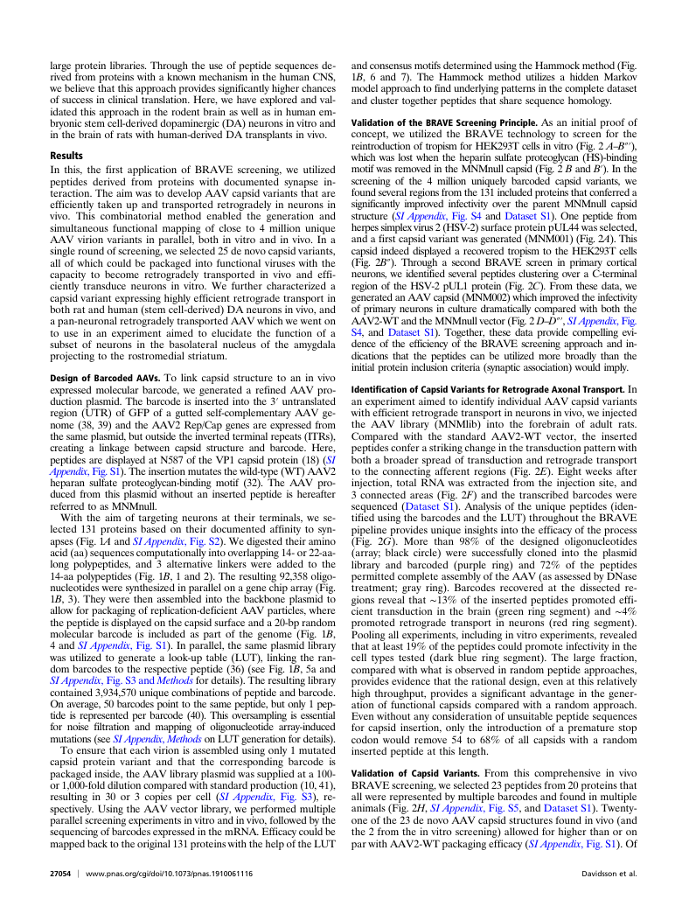
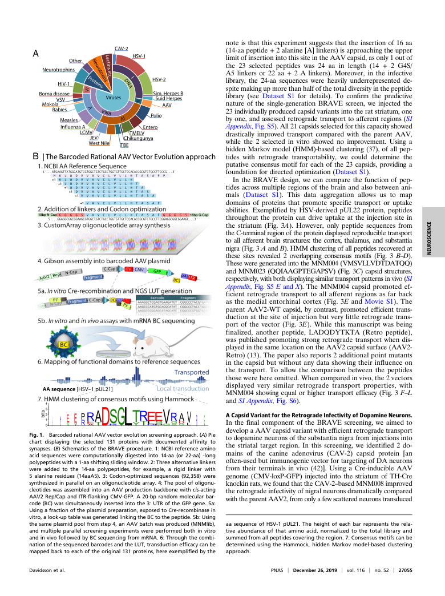
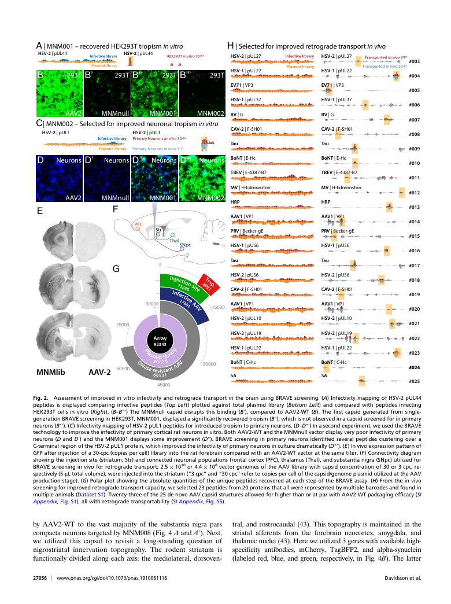
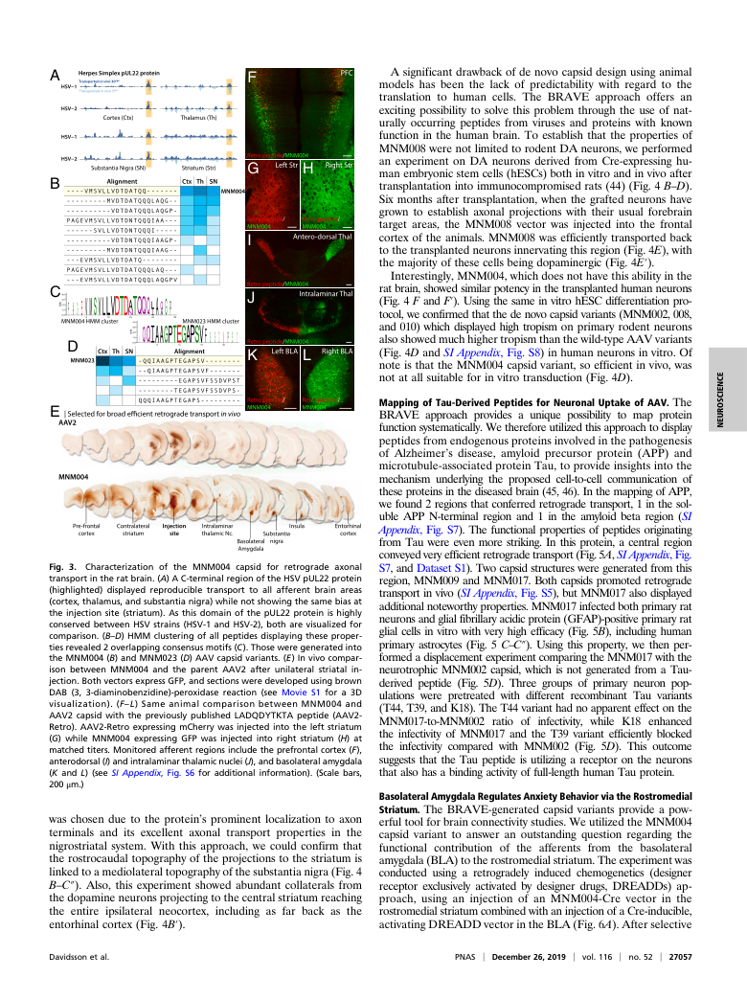
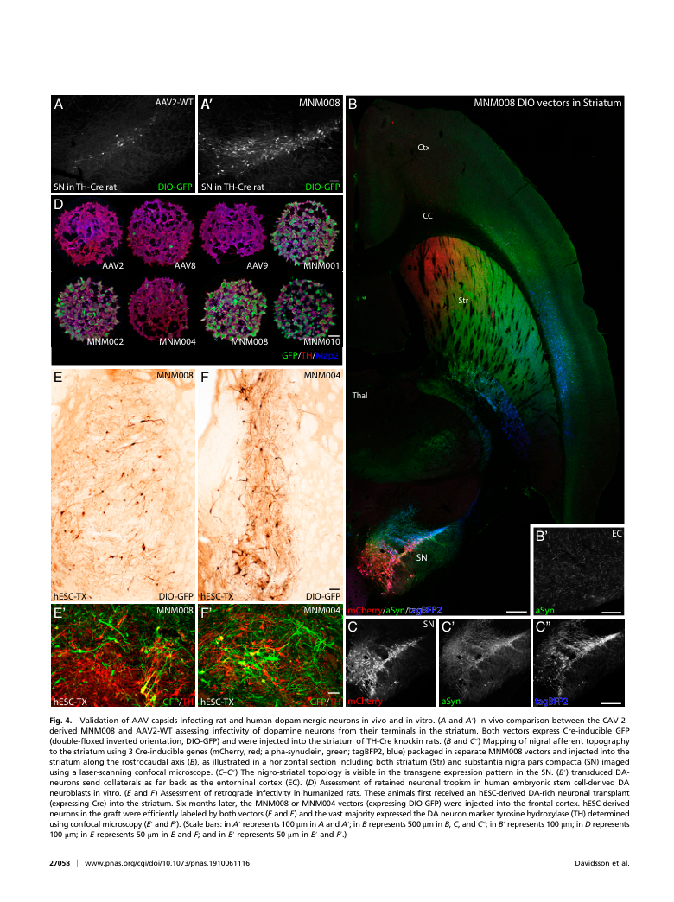
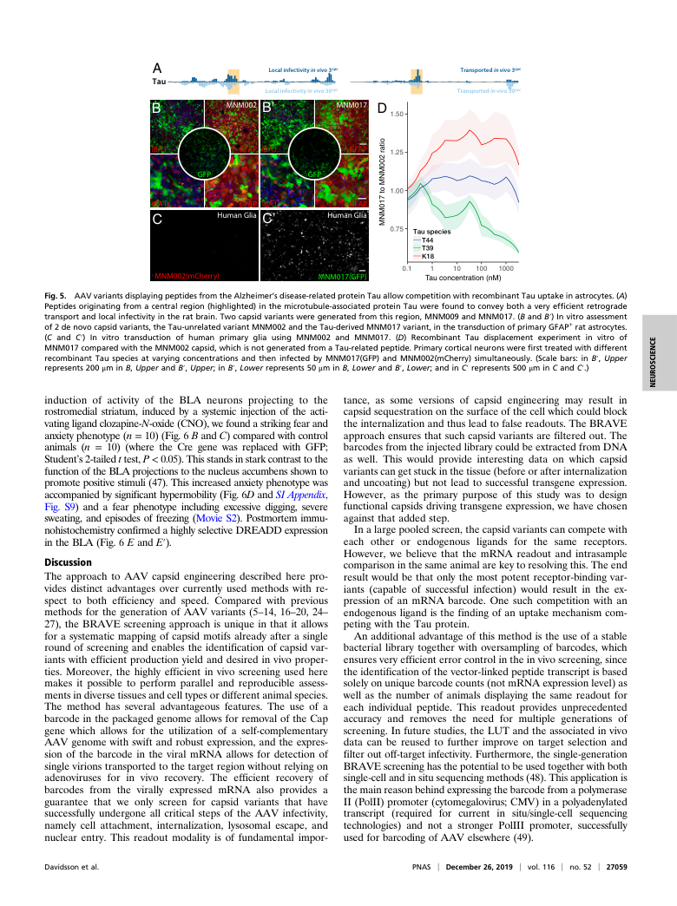
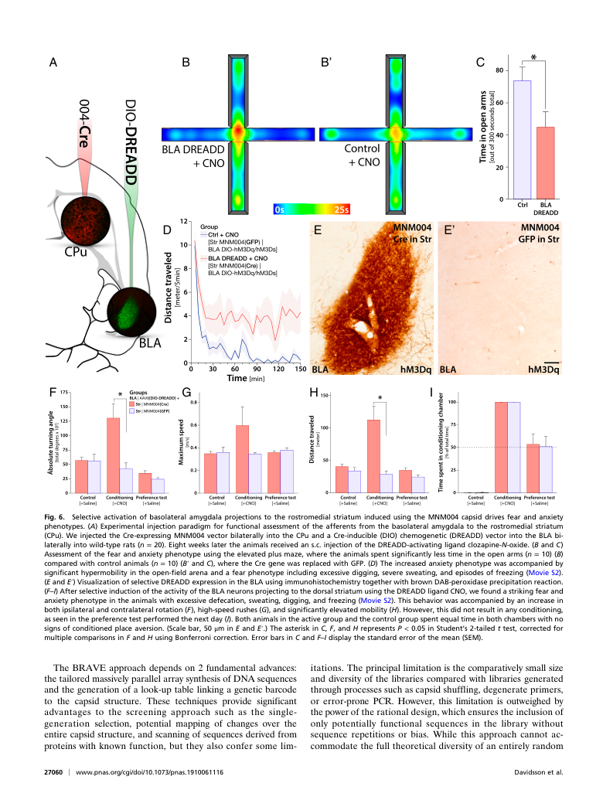
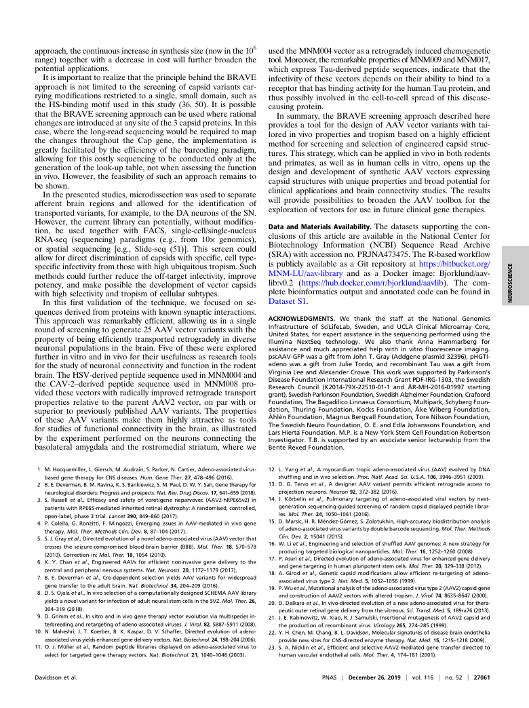
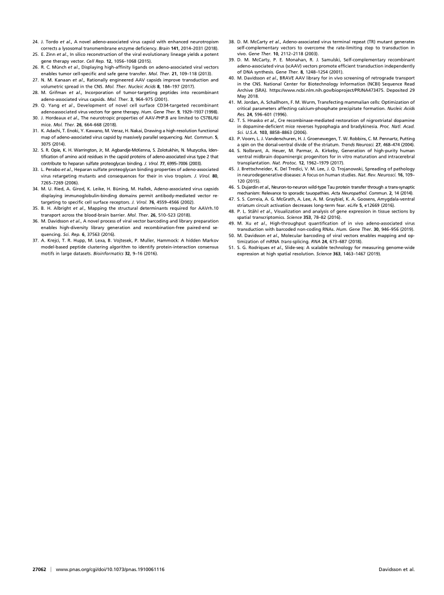

A systematic capsid evolution approach performed in
vivo for the design of AAV vectors with tailored
properties and tropism
MarcusDavidssona,1,GangWanga,1,2,PatrickAldrin-Kirka,TiagoCardosob,SaraNolbrantb,MorganHartnora, JanithaMudannayakea,MalinParmarb,andTomasBjörklunda,3 aMolecularNeuromodulation,DepartmentofExperimentalMedicalScience,LundUniversity,22184Lund,Sweden;andbDevelopmentalandRegenerative Neurobiology,DepartmentofExperimentalMedicalScience,LundStemCellCenter,LundUniversity,22184Lund,Sweden EditedbyTomasHökfelt,KarolinskaInstitute,Stockholm,Sweden,andapprovedNovember11,2019(receivedforreviewJune12,2019) Adeno-associated virus (AAV) capsid modification enables the been around for over 25 y, few have broadly replaced wild-type generation of recombinant vectors with tailored properties and variants in preclinical applications, and none has to date reached tropism. Most approaches to date depend on random screening, late-stage clinical trials despite distinct intellectual property in- enrichment, and serendipity. The approach explored here, called centives.Thereasonisthattheimprovedfeaturesandfunctions BRAVE(barcodedrationalAAVvectorevolution),enablesefficient have seldom transferred from the screening host species (most selection of engineered capsid structures on a large scale using oftenmouse)tohumansorthenonhumanprimate(30). onlyasinglescreeningroundinvivo.Theapproachstandsincon- To improve on this, we have developed a method for capsid trast to previous methods that require multiple generations of engineering named barcoded rational AAV vector evolution enrichment.WiththeBRAVEapproach,eachvirusparticledisplays (BRAVE), which encompasses all of the benefits of rational apeptide,derivedfromaprotein,ofknownfunctionontheAAV design (18, 26, 31–35) while maintaining the broad screening capsid surface, and a unique molecular barcode in the packaged diversitypermittedbydirectedevolution.Thekeytothismethod genome.ThesequencingofRNA-expressedbarcodesfromasingle- is a viral library production approach where each virus particle generation in vivo screen allows the mapping of putative binding displaysaprotein-derivedpeptideonthesurface,whichislinked sequencesfromhundredsofproteinssimultaneously.UsingtheBRAVE to a unique barcode in the packaged genome (36). Through approachandhiddenMarkovmodel-basedclustering,wepresent hidden Markov model-based clustering (37), we were able to 25syntheticcapsidvariantswithrefinedproperties,suchasretro- identify consensus motifs for neuronal cell type-specific retro- gradeaxonaltransportinspecificsubtypesofneurons,asshown grade transport and expression in the brain. The BRAVE ap- forbothrodentandhumandopaminergicneurons. proachenablestheselectionoffunctionalcapsidstructuresusing only a single-generation screening. Furthermore, it can be used | | | | vectorevolution genetherapy barcoding retrogradetransport to map, with high resolution, the putative binding sequences of dopamine Significance The recombinant adeno-associated virus (AAV) vector has becomethedefactostandardforinvivogenetransfer(1).In A challenge with the available synthetic viruses used for the clinicalgenetherapy,AAVhasbeenproventobesafeandresult treatmentofgeneticdisordersisthattheyoriginatefromwild- instablegeneexpressionovermanyyears(2,3).However,with typeviruses.Thesevirusesbenefitfrominfectingasmanycells few exceptions, specificity and efficacy are still issues hindering as possible in the body, while therapies should most often some critical applications and have delayed broad clinical targetaparticularcelltype,forexample,dopamineneuronsin adoptioninotherareas(4).EngineeringoftheAAVcapsidhas thebrain.Inthispaper,wepresentatechniquefordeveloping been conducted over the last 2 decades to address these short- targeted synthetic viruses suitable for clinical therapy. We comingsandtogeneratecapsids withalteredtropism andfunc- show that such virusescan be designedto target human do- tion(5–15).AAVcapsidengineeringcanbroadlybedividedinto pamineneuronsinvivoandtotransportalongtheconnective directed evolution and rational design. In directed evolution, pathwaysinthebrain,allowingforunprecedentedaccuracyof random processes are utilized such as capsid gene shuffling of thetherapy. available serotypes (9, 16, 17), random peptide insertion into a knownsiteoftheAAVcapsid(10,14,18–21),orphagedisplay Authorcontributions:M.D.,G.W.,P.A.-K.,M.P.,andT.B.designedresearch;M.D.,G.W., (22, 23). This approach, however, involves a selection process P.A.-K.,T.C.,S.N.,M.H.,andJ.M.performedresearch;M.D.,G.W.,P.A.-K.,andT.B.ana- that requires multiple generations of screening to identify func- lyzeddata;andM.D.,G.W.,P.A.-K.,M.P.,andT.B.wrotethepaper. tional capsids (6–8), which excludes the use of tools such as Competingintereststatement:M.D.andT.B.areauthorsofapatentapplicationcovering componentsofthepresentedstudy. single-cellorinsitusequencing.Duetotherandomnatureofthis process, it is also inherently unreproducible, and the resulting ThisarticleisaPNASDirectSubmission. capsidvariants provide littlemechanisticinsights into themolec- ThisopenaccessarticleisdistributedunderCreativeCommonsAttribution-NonCommercial- NoDerivativesLicense4.0(CCBY-NC-ND). ulartargetsengaged.Thealternativeapproachisrationaldesign, whereaprioriknowledgeisutilizedtodesignfewercapsidvariants Datadeposition:Datasetssupportingtheconclusionsofthisarticlehavebeendepositedin theNationalCenterforBiotechnologyInformation(NCBI)SequenceReadArchive(SRA) and through systematic evaluation refine the capsid structure to (accessionno.PRJNA473475).TheR-basedworkflowispubliclyavailableasaGitrepository achieve the desired function. Examples of this include the dis- athttps://bitbucket.org/MNM-LU/aav-libraryandasaDockerimage:Bjorklund/aavlib:v0.2. ruption of native cellular binding motifs and insertion of high- 1M.D.andG.W.contributedequallytothiswork. affinityligandsintheCapgene,andthroughtheuseofstructural 2Presentaddress:NationalInstituteforViralDiseaseControlandPrevention,Chinese and evolutionary shared sequences infer putative ancestral var- CenterforDiseaseControlandPrevention,102206Beijing,China. iants(24–29).Whatunifiestherationaldesignapproachesisthat 3Towhomcorrespondencemaybeaddressed.Email:tomas.bjorklund@med.lu.se. theresultingtestedvariantsarecountedinthetensorhundreds Thisarticlecontainssupportinginformationonlineathttps://www.pnas.org/lookup/suppl/ comparedwiththethousandstomillionsofcapsidsassessedusing doi:10.1073/pnas.1910061116/-/DCSupplemental. adirectedevolutionapproach.WhileAAVcapsidengineeringhas FirstpublishedDecember9,2019. www.pnas.org/cgi/doi/10.1073/pnas.1910061116 PNAS | December26,2019 | vol.116 | no.52 | 27053–27062 ECNEICSORUEN

largeprotein libraries.Throughtheuseofpeptidesequencesde- andconsensusmotifsdeterminedusingtheHammockmethod(Fig. rivedfromproteinswithaknownmechanisminthehumanCNS, 1B, 6 and 7). The Hammock method utilizes a hidden Markov webelievethatthisapproachprovidessignificantlyhigherchances modelapproachtofindunderlyingpatternsinthecompletedataset ofsuccessinclinicaltranslation.Here,wehaveexploredandval- andclustertogetherpeptidesthatsharesequencehomology. idatedthisapproachintherodentbrainaswellasinhumanem- bryonicstemcell-deriveddopaminergic(DA)neuronsinvitroand ValidationoftheBRAVEScreeningPrinciple.As an initial proof of inthebrainofratswithhuman-derivedDAtransplantsinvivo. concept, we utilized the BRAVE technology to screen for the reintroductionoftropismforHEK293Tcellsinvitro(Fig.2A–B″′), Results which was lost when the heparin sulfate proteoglycan (HS)-binding In this, the first application of BRAVE screening, we utilized motifwasremovedintheMNMnullcapsid(Fig.2BandB′).Inthe peptides derived from proteins with documented synapse in- screening of the 4 million uniquely barcoded capsid variants, we teraction.TheaimwastodevelopAAVcapsidvariantsthatare foundseveralregionsfromthe131includedproteinsthatconferreda efficiently taken up and transported retrogradely in neurons in significantly improved infectivity over the parent MNMnull capsid vivo. This combinatorial method enabled the generation and structure (SI Appendix, Fig. S4 and Dataset S1). One peptide from simultaneous functional mapping of close to 4 million unique herpessimplexvirus2(HSV-2)surfaceproteinpUL44wasselected, AAV virion variants in parallel, both in vitro and in vivo. In a andafirstcapsidvariantwasgenerated(MNM001)(Fig.2A).This singleroundofscreening,weselected25denovocapsidvariants, capsidindeeddisplayedarecoveredtropismtotheHEK293Tcells all of which could be packaged into functional viruses with the (Fig. 2B″). Through a second BRAVE screen in primary cortical capacity to become retrogradely transported in vivo and effi- neurons,weidentifiedseveralpeptidesclusteringoveraC-terminal ciently transduce neurons in vitro. We further characterized a regionoftheHSV-2pUL1 protein(Fig.2C).Fromthesedata,we capsidvariantexpressinghighlyefficientretrogradetransportin generatedanAAVcapsid(MNM002)whichimprovedtheinfectivity bothratandhuman(stemcell-derived)DAneuronsinvivo,and of primaryneuronsinculturedramaticallycomparedwithboththe apan-neuronalretrogradelytransportedAAVwhichwewenton AAV2-WTandtheMNMnullvector(Fig.2D–D″′,SIAppendix,Fig. to use in an experiment aimed to elucidate the function of a S4, and Dataset S1). Together, these data provide compelling evi- subset of neurons in the basolateral nucleus of the amygdala dence of the efficiency of the BRAVE screening approach and in- projecting tothe rostromedial striatum. dications that the peptides can be utilized more broadly than the initialproteininclusioncriteria(synapticassociation)wouldimply. Design of Barcoded AAVs. To link capsid structure to an in vivo expressed molecular barcode, we generated a refined AAV pro- IdentificationofCapsidVariantsforRetrogradeAxonalTransport.In duction plasmid. The barcode is inserted into the 3′ untranslated anexperimentaimedtoidentifyindividualAAVcapsidvariants region (UTR) of GFP of a gutted self-complementary AAV ge- withefficientretrogradetransportinneuronsinvivo,weinjected nome (38, 39)and the AAV2 Rep/Cap genesare expressed from the AAV library (MNMlib) into the forebrain of adult rats. thesameplasmid,butoutsidetheinvertedterminalrepeats(ITRs), Compared with the standard AAV2-WT vector, the inserted creating a linkage between capsid structure and barcode. Here, peptidesconferastrikingchangeinthetransductionpatternwith peptidesaredisplayedatN587oftheVP1capsidprotein(18)(SI botha broaderspread of transduction andretrograde transport Appendix,Fig.S1).Theinsertionmutatesthewild-type(WT)AAV2 to the connecting afferent regions (Fig. 2E). Eight weeks after heparan sulfate proteoglycan-binding motif (32). The AAV pro- injection, total RNA was extracted from the injection site, and duced from this plasmid without an inserted peptide is hereafter 3 connected areas (Fig. 2F) and the transcribed barcodes were referredtoasMNMnull. sequenced (Dataset S1). Analysis of the unique peptides (iden- With the aim of targeting neurons at their terminals, we se- tifiedusingthebarcodesandtheLUT)throughouttheBRAVE lected 131 proteins based on their documented affinity to syn- pipelineprovidesuniqueinsightsintotheefficacyoftheprocess apses(Fig.1AandSIAppendix,Fig.S2).Wedigestedtheiramino (Fig. 2G). More than 98% of the designed oligonucleotides acid(aa)sequencescomputationallyintooverlapping14-or22-aa- (array; black circle) were successfully cloned into the plasmid long polypeptides, and 3 alternative linkers were added to the library and barcoded (purple ring) and 72% of the peptides 14-aapolypeptides(Fig.1B,1and2).Theresulting92,358oligo- permittedcompleteassemblyoftheAAV(asassessedbyDNase nucleotidesweresynthesizedinparallelonagenechiparray(Fig. treatment; gray ring). Barcodes recovered at the dissected re- 1B, 3). They were then assembled into the backbone plasmid to gions reveal that ∼13% of the inserted peptides promoted effi- allowforpackagingofreplication-deficientAAVparticles,where cient transduction in the brain (green ring segment) and ∼4% thepeptideisdisplayedonthecapsidsurfaceanda20-bprandom promoted retrograde transport in neurons (red ring segment). molecular barcode is included as part of the genome (Fig. 1B, Poolingallexperiments,includinginvitroexperiments,revealed 4andSIAppendix,Fig.S1).Inparallel,thesameplasmidlibrary thatatleast19%ofthepeptidescouldpromoteinfectivityinthe was utilized to generate a look-up table (LUT), linking the ran- cell types tested (dark blue ring segment). The large fraction, dombarcodestotherespectivepeptide(36)(seeFig.1B,5aand comparedwithwhatisobservedinrandompeptideapproaches, SIAppendix,Fig.S3andMethodsfordetails).Theresultinglibrary providesevidencethattherationaldesign,evenatthisrelatively contained3,934,570uniquecombinationsofpeptideandbarcode. high throughput, provides a significant advantage in the gener- Onaverage,50barcodespointtothesamepeptide,butonly1pep- ation of functional capsids compared with a random approach. tide is represented per barcode (40). This oversampling is essential Evenwithoutanyconsiderationofunsuitablepeptidesequences for noise filtration and mapping of oligonucleotide array-induced for capsid insertion, only the introduction of a premature stop mutations(seeSIAppendix,MethodsonLUTgenerationfordetails). codon would remove 54 to 68% of all capsids with a random Toensurethateachvirionisassembledusingonly1mutated inserted peptideatthislength. capsid protein variant and that the corresponding barcode is packagedinside,theAAVlibraryplasmidwassuppliedata100- Validation of Capsid Variants. From this comprehensive in vivo or1,000-folddilutioncomparedwithstandardproduction(10,41), BRAVEscreening,weselected23peptidesfrom20proteinsthat resulting in 30 or 3 copies per cell (SI Appendix, Fig. S3), re- allwererepresentedbymultiplebarcodesandfoundinmultiple spectively.UsingtheAAVvectorlibrary,weperformedmultiple animals(Fig.2H,SIAppendix,Fig.S5,andDatasetS1).Twenty- parallelscreeningexperimentsinvitroandinvivo,followedbythe oneofthe23denovoAAVcapsidstructuresfoundinvivo(and sequencingofbarcodesexpressedinthemRNA.Efficacycouldbe the2fromtheinvitroscreening)allowedforhigherthanoron mappedbacktotheoriginal131proteinswiththehelpoftheLUT parwithAAV2-WTpackagingefficacy(SIAppendix,Fig.S1).Of 27054 | www.pnas.org/cgi/doi/10.1073/pnas.1910061116 Davidssonetal.

note is that this experiment suggests that the insertion of 16 aa (14-aapeptide+2alanine[A]linkers)isapproachingtheupper A limitofinsertionintothissiteintheAAVcapsid,asonly1outof the 23 selected peptides was 24 aa in length (14 + 2 G4S/ A5 linkers or 22 aa + 2 A linkers). Moreover, in the infective library, the 24-aa sequences were heavily underrepresented de- spitemakingupmorethanhalfofthetotaldiversityinthepeptide library (see Dataset S1 for details). To confirm the predictive nature of the single-generation BRAVE screen, we injected the 23individuallyproducedcapsidvariantsintotheratstriatum,one by one,andassessed retrograde transportto afferentregions(SI Appendix,Fig.S5).All21capsidsselectedforthiscapacityshowed drastically improved transport compared with the parent AAV, while the 2 selected in vitro showed no improvement. Using a hidden Markov model (HMM)-based clustering (37), of all pep- B tides with retrograde transportability, we could determine the putative consensus motif for each of the 23 capsids, providing a foundationfordirectedoptimization(DatasetS1). In the BRAVE design, we can compare the function of pep- tides across multiple regions ofthe brain andalso between ani- mals (Dataset S1). This data aggregation allows us to map domains of proteins that promote specific transport or uptake abilities. Exemplified by HSV-derived pUL22 protein, peptides throughout the protein can drive uptake at the injection site in the striatum (Fig. 3A). However, only peptide sequences from theC-terminalregionoftheproteindisplayedreproducibletransport to all afferent brain structures: the cortex, thalamus, and substantia nigra(Fig.3AandB).HMMclusteringofallpeptidesrecoveredat these sites revealed 2 overlapping consensus motifs (Fig. 3 B–D). TheseweregeneratedintotheMNM004(VMSVLLVDTDATQQ) andMNM023(QQIAAGPTEGAPSV)(Fig.3C)capsidstructures, respectively,withbothdisplayingsimilartransportpatternsinvivo(SI Appendix, Fig. S5 E and X). The MNM004 capsid promoted ef- ficient retrograde transport to all afferent regions as far back as the medial entorhinal cortex (Fig. 3E and Movie S1). The parent AAV2-WT capsid, by contrast, promoted efficient trans- duction at the site of injection but very little retrograde trans- port of the vector (Fig. 3E). While this manuscript was being finalized, another peptide, LADQDYTKTA (Retro peptide), was published promoting strong retrograde transport when dis- playedinthesamelocationontheAAV2capsidsurface(AAV2- Retro)(13).Thepaperalsoreports2additionalpointmutants in the capsid but without any data showing their influence on the transport. To allow the comparison between the peptides thosewerehereomitted.Whencomparedinvivo,the2vectors displayed very similar retrograde transport properties, with MNM004showingequalorhighertransport efficacy(Fig.3 F–L andSIAppendix,Fig.S6). ACapsidVariantfortheRetrogradeInfectivityofDopamineNeurons. In the final component of the BRAVE screening, we aimed to developaAAVcapsidvariantwithefficientretrogradetransport Fig.1. BarcodedrationalAAVvectorevolutionscreeningapproach.(A)Pie todopamineneuronsofthesubstantianigrafrominjectionsinto chart displaying the selected 131 proteins with documented affinity to the striatal target region. In this screening, we identified 2 do- synapses.(B)SchematicsoftheBRAVEprocedure.1:NCBIreferenceamino mains of the canine adenovirus (CAV-2) capsid protein [an acidsequenceswerecomputationallydigestedinto14-aa(or22-aa)-long often-usedbutimmunogenicvectorfortargetingofDAneurons polypeptideswitha1-aashiftingslidingwindow.2:Threealternativelinkers were added to the 14-aa polypeptides, for example, a rigid linker with from their terminals in vivo (42)]. Using a Cre-inducible AAV 5 alanine residues (14aaA5). 3: Codon-optimized sequences (92,358) were genome (CMV-loxP-GFP) injected into the striatum of TH-Cre synthesizedinparallelonanoligonucleotidearray.4:Thepoolofoligonu- knockinrats,wefoundthattheCAV-2–basedMNM008improved cleotideswasassembledintoanAAVproductionbackbonewithcis-acting theretrogradeinfectivityofnigralneuronsdramaticallycompared AAV2Rep/CapandITR-flankingCMV-GFP.A20-bprandommolecularbar- withtheparentAAV2,fromonlyafewscatteredneuronstransduced code(BC)wassimultaneouslyinsertedintothe3′UTRoftheGFPgene.5a: Usingafractionoftheplasmidpreparation,exposedtoCre-recombinasein vitro,alook-uptablewasgeneratedlinkingtheBCtothepeptide.5b:Using thesameplasmidpoolfromstep4,anAAVbatchwasproduced(MNMlib), aasequenceofHSV-1pUL21.Theheightofeachbarrepresentstherela- andmultipleparallelscreeningexperimentswereperformedbothinvitro tiveabundanceofthataminoacid,normalizedtothetotallibraryand andinvivofollowedbyBCsequencingfrommRNA.6:Throughthecombi- summedfromallpeptidescoveringtheregion.7:Consensusmotifscanbe nationofthesequencedbarcodesandtheLUT,transductionefficacycanbe determinedusingtheHammock,hiddenMarkovmodel-basedclustering mappedbacktoeachoftheoriginal131proteins,hereexemplifiedbythe approach. Davidssonetal. PNAS | December26,2019 | vol.116 | no.52 | 27055 ECNEICSORUEN

A | MNM001 – recovered HEK293T tropism in vitro H | Selected for improved retrograde transport in vivo HSV-2 | pUL44 Infective library HSV-2 | pUL44 HEK293T in vitro 30cpc HSV-2 | pUL27 Infective library HSV-2 | pUL27 Transported in vivo 3cpc #003 Plasmid library Plasmid library Transported in vivo 30cpc HSV-1 | pUL22 HSV-1 | pUL22 B 293T B’ 293T B’’ 293T B’’’ 293T #004 EV71 | VP3 EV71 | VP3 #005 HSV-1 | pUL37 HSV-1 | pUL37 #006 AAV2 MNMnull MNM001 MNM002 BV | G BV | G #007 C | MNM002 – Selected for improved neuronal tropism in vitro CAV-2 | F-SH01 CAV-2 | F-SH01 HSV-2 | pUL1 HSV-2 | pUL1 #008 Infective library Primary Neurons in vitro 30cpc Tau Tau Plasmid library Primary Neurons in vitro 3cpc #009 D Neurons D’ Neurons D’’ Neurons D’’’ Neurons BoNT | E-Hc BoNT | E-Hc #010 TBEV | E-4387-B7 TBEV | E-4387-B7 #011 MV | H-Edmonston MV | H-Edmonston #012 AAV2 MNMnull MNM001 MNM002 HRP HRP E F #013 AAV1 AAV1 #014 PFC Str PRV | Becker-gE PRV | Becker-gE #015 Thal SNpc HSV-1 | pUS6 HSV-1 | pUS6 #016 Tau Tau G 0 #017 90000 In In je f 1 e c 1 2 c 7 t 2 4 i t 4 o 0 i 0 v 1 n e s A it A e V 39 T 9 r 1 sp 1 . 5000 C A H A A S V V V - - 1 2 2 | | F p - U S S H 6 01 C H A A A S V V V - - 1 2 2 | | F p - U S S H 6 01 # # # 0 0 0 1 1 2 9 8 0 HSV-2 | pUL10 HSV-2 | pUL10 75000 #021 HSV-2 | pUL19 HSV-2 | pUL19 Array #022 92343 Plasmid library HSV-1 | pUL22 HSV-1 | pUL22 #023 MNMlib AAV-2 60000 DNase r 9 e 0 s 6 is 3 t 5 ant AAV 30000 BoNT | C-Hc BoNT | C-Hc ##002244 66531 SA SA #025 45000 Fig.2. AssessmentofimprovedinvitroinfectivityandretrogradetransportinthebrainusingBRAVEscreening.(A)InfectivitymappingofHSV-2pUL44 peptides isdisplayed comparinginfectivepeptides(TopLeft)plotted against totalplasmidlibrary (Bottom Left)and compared with peptides infecting HEK293Tcellsinvitro(Right).(B–B″′)TheMNMnullcapsiddisruptsthisbinding(B′),comparedtoAAV2-WT(B).Thefirstcapsidgeneratedfromsingle- generationBRAVEscreeninginHEK293T,MNM001,displayedasignificantlyrecoveredtropism(B″),whichisnotobservedinacapsidscreenedforinprimary neurons(B″′).(C)InfectivitymappingofHSV-2pUL1peptidesforintroducedtropismtoprimaryneurons.(D–D″′)Inasecondexperiment,weusedtheBRAVE technologytoimprovetheinfectivityofprimarycorticalratneuronsinvitro.BothAAV2-WTandtheMNMnullvectordisplayverypoorinfectivityofprimary neurons(DandD′)andtheMNM001displayssomeimprovement(D″).BRAVEscreeninginprimaryneuronsidentifiedseveralpeptidesclusteringovera C-terminalregionoftheHSV-2pUL1protein,whichimprovedtheinfectivityofprimaryneuronsinculturedramatically(D″′).(E)Invivoexpressionpatternof GFPafterinjectionofa30-cpc(copiespercell)libraryintotheratforebraincomparedwithanAAV2-WTvectoratthesametiter.(F)Connectivitydiagram showingtheinjectionsite(striatum;Str)andconnectedneuronalpopulationsfrontalcortex(PFC),thalamus(Thal),andsubstantianigra(SNpc)utilizedfor BRAVEscreeninginvivoforretrogradetransport;2.5×1010or4.4×108vectorgenomesoftheAAVlibrarywithcapsidconcentrationof30or3cpc,re- spectively(5-μLtotalvolume),wereinjectedintothestriatum(“3cpc”and“30cpc”refertocopiespercellofthecapsid/genomeplasmidutilizedattheAAV productionstage).(G)PolarplotshowingtheabsolutequantitiesoftheuniquepeptidesrecoveredateachstepoftheBRAVEassay.(H)Fromtheinvivo screeningforimprovedretrogradetransportcapacity,weselected23peptidesfrom20proteinsthatallwererepresentedbymultiplebarcodesandfoundin multipleanimals(DatasetS1).Twenty-threeofthe25denovoAAVcapsidstructuresallowedforhigherthanoratparwithAAV2-WTpackagingefficacy(SI Appendix,Fig.S1),allwithretrogradetransportability(SIAppendix,Fig.S5). by AAV2-WT to the vast majority of the substantia nigra pars tral,androstrocaudal(43). Thistopographyismaintained inthe compactaneuronstargetedbyMNM008(Fig.4AandA′).Next, striatal afferents from the forebrain neocortex, amygdala, and we utilized this capsid to revisit a long-standing question of thalamicnuclei(43).Hereweutilized3geneswithavailablehigh- nigrostriatal innervation topography. The rodent striatum is specificity antibodies, mCherry, TagBFP2, and alpha-synuclein functionally divided along each axis: the mediolateral, dorsoven- (labeled red, blue, and green, respectively, in Fig. 4B). The latter 27056 | www.pnas.org/cgi/doi/10.1073/pnas.1910061116 Davidssonetal.

A F Asignificantdrawbackofdenovocapsiddesignusinganimal models has been the lack of predictability with regard to the translation to human cells. The BRAVE approach offers an exciting possibility to solve this problem through the use of nat- urally occurring peptides from viruses and proteins with known function in the human brain. To establish that the properties of MNM008werenotlimitedtorodentDAneurons,weperformed an experiment on DA neurons derived from Cre-expressing hu- G H manembryonicstemcells(hESCs)bothinvitroandinvivoafter B transplantationintoimmunocompromisedrats(44)(Fig.4B–D). Six months after transplantation, when the grafted neurons have grown to establish axonal projections with their usual forebrain target areas, the MNM008 vector was injected into the frontal I cortex of the animals. MNM008 was efficiently transported back tothetransplantedneuronsinnervatingthisregion(Fig.4E),with themajorityofthesecellsbeingdopaminergic(Fig.4E′). Interestingly,MNM004,whichdoesnothavethisabilityinthe C ratbrain,showedsimilarpotencyinthetransplantedhumanneurons J (Fig.4FandF′).UsingthesameinvitrohESCdifferentiationpro- tocol,weconfirmedthatthedenovocapsidvariants(MNM002,008, and010)whichdisplayedhightropismon primary rodent neurons alsoshowedmuchhighertropismthanthewild-typeAAVvariants D K L (Fig.4DandSIAppendix,Fig.S8)inhumanneuronsinvitro.Of noteisthattheMNM004capsidvariant,soefficientinvivo,was notatallsuitableforinvitrotransduction(Fig.4D). MappingofTau-DerivedPeptidesforNeuronalUptakeofAAV.The E BRAVE approach provides a unique possibility to map protein functionsystematically.Wethereforeutilizedthisapproachtodisplay peptidesfromendogenousproteinsinvolvedinthepathogenesis of Alzheimer’s disease, amyloid precursor protein (APP) and microtubule-associatedproteinTau,toprovideinsightsintothe mechanism underlying the proposed cell-to-cell communication of theseproteinsinthediseasedbrain(45,46).InthemappingofAPP, wefound2regionsthatconferredretrogradetransport,1inthesol- uble APP N-terminal region and 1 in the amyloid beta region (SI Appendix,Fig.S7).Thefunctionalpropertiesofpeptidesoriginating from Tau were even more striking. In this protein, a central region conveyedveryefficientretrogradetransport(Fig.5A,SIAppendix,Fig. Fig. 3. Characterization of the MNM004 capsid for retrograde axonal S7,andDatasetS1).Twocapsidstructuresweregeneratedfromthis transportintheratbrain.(A)AC-terminalregionoftheHSVpUL22protein region,MNM009andMNM017.Bothcapsidspromotedretrograde (highlighted) displayed reproducible transport to all afferent brain areas transportinvivo(SIAppendix,Fig.S5),butMNM017alsodisplayed (cortex,thalamus,andsubstantianigra)whilenotshowingthesamebiasat additionalnoteworthyproperties.MNM017infectedbothprimaryrat theinjectionsite(striatum).AsthisdomainofthepUL22proteinishighly neuronsandglialfibrillaryacidicprotein(GFAP)-positiveprimaryrat conservedbetweenHSVstrains(HSV-1andHSV-2),botharevisualizedfor comparison.(B–D)HMMclusteringofallpeptidesdisplayingtheseproper- glialcellsinvitrowithveryhighefficacy(Fig.5B),includinghuman tiesrevealed2overlappingconsensusmotifs(C).Thoseweregeneratedinto primary astrocytes (Fig. 5 C–C″). Using this property, we then per- theMNM004(B)andMNM023(D)AAVcapsidvariants.(E)Invivocompar- formedadisplacementexperimentcomparingtheMNM017withthe ison between MNM004 and the parent AAV2 after unilateral striatal in- neurotrophic MNM002 capsid, which is not generated from a Tau- jection.BothvectorsexpressGFP,andsectionsweredevelopedusingbrown derived peptide (Fig. 5D). Three groups of primary neuron pop- DAB (3, 3-diaminobenzidine)-peroxidase reaction (see Movie S1 for a 3D ulations were pretreated with different recombinant Tau variants visualization).(F–L)SameanimalcomparisonbetweenMNM004and (T44,T39,andK18).TheT44varianthadnoapparenteffectonthe AAV2capsidwiththepreviouslypublishedLADQDYTKTApeptide(AAV2- MNM017-to-MNM002 ratio of infectivity, while K18 enhanced Retro).AAV2-RetroexpressingmCherrywasinjectedintotheleftstriatum the infectivity of MNM017 and the T39 variant efficiently blocked (G) while MNM004 expressing GFP was injected into right striatum (H) at the infectivity compared with MNM002 (Fig. 5D). This outcome matchedtiters.Monitoredafferentregionsincludetheprefrontalcortex(F), anterodorsal(I)andintralaminarthalamicnuclei(J),andbasolateralamygdala suggests that the Tau peptide is utilizing a receptor on the neurons (K andL) (seeSIAppendix,Fig. S6for additionalinformation).(Scalebars, thatalsohasabindingactivityoffull-lengthhumanTauprotein. 200μm.) BasolateralAmygdalaRegulatesAnxietyBehaviorviatheRostromedial Striatum.The BRAVE-generated capsid variants provide a pow- was chosen due to the protein’s prominent localization to axon erfultoolforbrainconnectivitystudies.WeutilizedtheMNM004 terminals and its excellent axonal transport properties in the capsid variant to answer an outstanding question regarding the nigrostriatal system. With this approach, we could confirm that functional contribution of the afferents from the basolateral therostrocaudaltopographyoftheprojectionstothestriatumis amygdala(BLA)totherostromedialstriatum.Theexperimentwas linkedtoamediolateraltopographyofthesubstantianigra(Fig.4 conducted using a retrogradely induced chemogenetics (designer B–C″). Also, this experiment showed abundant collaterals from receptor exclusively activated by designer drugs, DREADDs) ap- thedopamineneuronsprojectingtothecentralstriatumreaching proach, using an injection of an MNM004-Cre vector in the the entire ipsilateral neocortex, including as far back as the rostromedialstriatumcombinedwithaninjectionofaCre-inducible, entorhinalcortex(Fig.4B′). activatingDREADDvectorintheBLA(Fig.6A).Afterselective Davidssonetal. PNAS | December26,2019 | vol.116 | no.52 | 27057 ECNEICSORUEN

A’ A AAV2-WT MNM008 B MNM008 DIO vectors in Striatum
SN in TH-Cre rat DIO-GFP SN in TH-Cre rat DIO-GFP D CC
AAV2 AAV8 AAV9 MNM001
MNM002 MNM004 MNM008 MNM010 GFP/TH/Map2 E MNM008 F MNM004 Thal
hESC-TX DIO-GFP hESC-TX DIO-GFP E’ MNM008 F’ MNM004 mCherry/aSyn/tagBFP2 aSyn C SN C’ C’’
hESC-TX GFP/TH hESC-TX GFP/TH mCherry aSyn tagBFP2 Fig.4. ValidationofAAVcapsidsinfectingratandhumandopaminergicneuronsinvivoandinvitro.(AandA′)InvivocomparisonbetweentheCAV-2– derivedMNM008andAAV2-WT assessinginfectivity ofdopamineneuronsfrom theirterminals inthe striatum. Bothvectorsexpress Cre-inducible GFP (double-floxedinvertedorientation,DIO-GFP)andwereinjectedintothestriatumofTH-Creknockinrats.(BandC″)Mappingofnigralafferenttopography tothestriatumusing3Cre-induciblegenes(mCherry,red;alpha-synuclein,green;tagBFP2,blue)packagedinseparateMNM008vectorsandinjectedintothe striatumalongtherostrocaudalaxis(B),asillustratedinahorizontalsectionincludingbothstriatum(Str)andsubstantianigraparscompacta(SN)imaged usingalaser-scanningconfocalmicroscope.(C–C″)Thenigro-striataltopologyisvisibleinthetransgeneexpressionpatternintheSN.(B′)transducedDA- neuronssendcollateralsasfarbackastheentorhinalcortex(EC).(D)Assessmentofretainedneuronaltropisminhumanembryonicstemcell-derivedDA neuroblastsinvitro.(EandF)Assessmentofretrogradeinfectivityinhumanizedrats.TheseanimalsfirstreceivedanhESC-derivedDA-richneuronaltransplant (expressingCre)intothestriatum.Sixmonthslater,theMNM008orMNM004vectors(expressingDIO-GFP)wereinjectedintothefrontalcortex.hESC-derived neuronsinthegraftwereefficientlylabeledbybothvectors(EandF)andthevastmajorityexpressedtheDAneuronmarkertyrosinehydroxylase(TH)determined usingconfocalmicroscopy(E′andF′).(Scalebars:inA′represents100μminAandA′;inBrepresents500μminB,C,andC″;inB′represents100μm;inDrepresents 100μm;inErepresents50μminEandF;andinE′represents50μminE′andF′.) 27058 | www.pnas.org/cgi/doi/10.1073/pnas.1910061116 Davidssonetal.

A Local infectivity in vivo 3cpc Transported in vivo 3cpc Tau Local infectivity in vivo 30cpc Transported in vivo 30cpc D 1.50 1.25
0.1 1 10 100 1000 Tau concentration (nM)
induction of activity of the BLA neurons projecting to the tance, as some versions of capsid engineering may result in rostromedial striatum, induced by a systemic injection of the acti- capsidsequestrationonthesurfaceofthecellwhichcouldblock vatingligandclozapine-N-oxide(CNO),wefoundastrikingfearand theinternalizationandthusleadtofalsereadouts.TheBRAVE anxietyphenotype(n=10)(Fig.6BandC)comparedwithcontrol approachensuresthatsuchcapsidvariantsarefilteredout.The animals (n = 10) (where the Cre gene was replaced with GFP; barcodesfromtheinjectedlibrarycouldbeextractedfromDNA Student’s2-tailedttest,P<0.05).Thisstandsinstarkcontrasttothe as well. This would provide interesting data on which capsid functionoftheBLAprojectionstothenucleusaccumbensshownto variantscangetstuckinthetissue(beforeorafterinternalization promotepositivestimuli(47).Thisincreasedanxietyphenotypewas and uncoating) but not lead to successful transgene expression. accompaniedbysignificanthypermobility(Fig.6DandSIAppendix, However, as the primary purpose of this study was to design Fig. S9) and a fear phenotype including excessive digging, severe functionalcapsidsdrivingtransgeneexpression,wehavechosen sweating,andepisodesoffreezing(MovieS2).Postmortemimmu- againstthat addedstep. nohistochemistryconfirmedahighlyselectiveDREADDexpression Inalargepooledscreen,thecapsidvariantscancompetewith intheBLA(Fig.6EandE′). each other or endogenous ligands for the same receptors. However, we believe that the mRNA readout and intrasample Discussion comparisoninthesameanimalarekeytoresolvingthis.Theend The approach to AAV capsid engineering described here pro- result would be that only the most potent receptor-binding var- vides distinct advantages over currently used methods with re- iants (capable of successful infection) would result in the ex- spect to both efficiency and speed. Compared with previous pression of an mRNA barcode. One such competition with an methods for the generation of AAV variants (5–14, 16–20, 24– endogenous ligand is the finding of an uptake mechanism com- 27), the BRAVE screening approach is unique in that it allows petingwiththe Tauprotein. for a systematic mapping of capsid motifs already after a single Anadditional advantageofthismethodistheuseofastable round of screening and enables the identification of capsid var- bacterial library together with oversampling of barcodes, which iants with efficient production yield and desired in vivo proper- ensuresveryefficienterrorcontrolintheinvivoscreening,since ties. Moreover, the highly efficient in vivo screening used here theidentificationofthevector-linkedpeptidetranscriptisbased makes it possible to perform parallel and reproducible assess- solelyonuniquebarcodecounts(notmRNAexpressionlevel)as mentsindiversetissuesandcelltypesordifferentanimalspecies. well as the number of animals displaying the same readout for The method has several advantageous features. The use of a each individual peptide. This readout provides unprecedented barcodeinthepackagedgenomeallowsforremovaloftheCap accuracy and removes the need for multiple generations of gene which allows for the utilization of a self-complementary screening.Infuturestudies,theLUTandtheassociatedinvivo AAV genome with swift and robust expression, and the expres- data can be reused to further improve on target selection and sion of the barcode in the viral mRNA allows for detection of filteroutoff-targetinfectivity.Furthermore,thesingle-generation singlevirionstransportedtothetargetregionwithoutrelyingon BRAVEscreeninghasthepotentialtobeusedtogetherwithboth adenoviruses for in vivo recovery. The efficient recovery of single-cellandinsitusequencingmethods(48).Thisapplicationis barcodes from the virally expressed mRNA also provides a themainreasonbehindexpressingthebarcodefromapolymerase guarantee that we only screen for capsid variants that have II(PolII)promoter(cytomegalovirus;CMV)inapolyadenylated successfully undergone all critical steps of the AAV infectivity, transcript (required for current in situ/single-cell sequencing namely cell attachment, internalization, lysosomal escape, and technologies) and not a stronger PolIII promoter, successfully nuclear entry. This readout modality is of fundamental impor- usedforbarcodingofAAVelsewhere(49). oitar 200MNM ot 710MNM B MNM002 B’ MNM017 IBA1 GFAP IBA1 GFAP GFP GFP IBA1 GFAP IBA1 GFAP C Human Glia C’ Human Glia Tau species T44 T39 K18 MNM002(mCherry) MNM017(GFP) Fig.5. AAVvariantsdisplayingpeptidesfromtheAlzheimer’sdisease-relatedproteinTauallowcompetitionwithrecombinantTauuptakeinastrocytes.(A) Peptidesoriginatingfromacentralregion(highlighted)inthemicrotubule-associatedproteinTauwerefoundtoconveybothaveryefficientretrograde transportandlocalinfectivityintheratbrain.Twocapsidvariantsweregeneratedfromthisregion,MNM009andMNM017.(BandB′)Invitroassessment of2denovocapsidvariants,theTau-unrelatedvariantMNM002andtheTau-derivedMNM017variant,inthetransductionofprimaryGFAP+ratastrocytes. (C and C′) In vitro transduction of human primary glia using MNM002 and MNM017. (D) Recombinant Tau displacement experiment in vitro of MNM017comparedwiththeMNM002capsid,whichisnotgeneratedfromaTau-relatedpeptide.Primarycorticalneuronswerefirsttreatedwithdifferent recombinantTauspeciesatvaryingconcentrationsandtheninfectedbyMNM017(GFP)andMNM002(mCherry)simultaneously.(Scalebars:inB′,Upper represents200μminB,UpperandB′,Upper;inB′,Lowerrepresents50μminB,LowerandB′,Lower;andinC′represents500μminCandC′.) Davidssonetal. PNAS | December26,2019 | vol.116 | no.52 | 27059 ECNEICSORUEN

Fig.6. SelectiveactivationofbasolateralamygdalaprojectionstotherostromedialstriatuminducedusingtheMNM004capsiddrivesfearandanxiety phenotypes.(A)Experimentalinjectionparadigmforfunctionalassessmentoftheafferentsfromthebasolateralamygdalatotherostromedialstriatum (CPu).WeinjectedtheCre-expressingMNM004vectorbilaterallyintotheCPuandaCre-inducible(DIO)chemogenetic(DREADD)vectorintotheBLAbi- laterallyintowild-typerats(n=20).Eightweekslatertheanimalsreceivedans.c.injectionoftheDREADD-activatingligandclozapine-N-oxide.(BandC) Assessmentofthefearandanxietyphenotypeusingtheelevatedplusmaze,wheretheanimalsspentsignificantlylesstimeintheopenarms(n=10)(B) comparedwithcontrolanimals(n=10)(B′andC),wheretheCregenewasreplacedwithGFP.(D)Theincreasedanxietyphenotypewasaccompaniedby significanthypermobilityintheopen-fieldarenaandafearphenotypeincludingexcessivedigging,severesweating,andepisodesoffreezing(MovieS2). (EandE′)VisualizationofselectiveDREADDexpressionintheBLAusingimmunohistochemistrytogetherwithbrownDAB-peroxidaseprecipitationreaction. (F–I)AfterselectiveinductionoftheactivityoftheBLAneuronsprojectingtothedorsalstriatumusingtheDREADDligandCNO,wefoundastrikingfearand anxietyphenotypeintheanimalswithexcessivedefecation,sweating,digging,andfreezing(MovieS2).Thisbehaviorwasaccompaniedbyanincreasein bothipsilateralandcontralateralrotation(F),high-speedrushes(G),andsignificantlyelevatedmobility(H).However,thisdidnotresultinanyconditioning, asseeninthepreferencetestperformedthenextday(I).Bothanimalsintheactivegroupandthecontrolgroupspentequaltimeinbothchamberswithno signsofconditionedplaceaversion.(Scalebar,50μminEandE′.)TheasteriskinC,F,andHrepresentsP<0.05inStudent’s2-tailedttest,correctedfor multiplecomparisonsinFandHusingBonferronicorrection.ErrorbarsinCandF–Idisplaythestandarderrorofthemean(SEM). The BRAVE approach depends on 2 fundamental advances: itations.Theprincipallimitationisthecomparativelysmallsize thetailoredmassivelyparallelarraysynthesisofDNAsequences and diversity of the libraries compared with libraries generated andthe generation ofa look-up table linking agenetic barcode throughprocessessuchascapsidshuffling,degenerateprimers, to the capsid structure. These techniques provide significant or error-prone PCR. However, this limitation is outweighed by advantages to the screening approach such as the single- thepoweroftherationaldesign,whichensurestheinclusionof generation selection, potential mapping of changes over the only potentially functional sequences in the library without entirecapsidstructure,andscanningofsequencesderivedfrom sequence repetitions or bias. While this approach cannot ac- proteins with known function, but they also confer some lim- commodatethefulltheoreticaldiversityofanentirelyrandom 27060 | www.pnas.org/cgi/doi/10.1073/pnas.1910061116 Davidssonetal.

approach,thecontinuousincreaseinsynthesissize(nowinthe106 usedtheMNM004vectorasaretrogradelyinducedchemogenetic range) together with a decrease in cost will further broaden the tool.Moreover,theremarkablepropertiesofMNM009andMNM017, potentialapplications. which express Tau-derived peptide sequences, indicate that the ItisimportanttorealizethattheprinciplebehindtheBRAVE infectivity of these vectors depends on their ability to bind to a approach is not limited to the screening of capsid variants car- receptorthathasbindingactivityforthehumanTauprotein,and rying modifications restricted to a single, small domain, such as thus possibly involved in the cell-to-cell spread of this disease- the HS-binding motif used in this study (36, 50). It is possible causingprotein. thattheBRAVEscreeningapproachcanbeusedwhererational In summary, the BRAVE screening approach described here changesareintroducedatanysiteofthe3capsidproteins.Inthis provides a tool for the design of AAV vector variants with tai- case,wherethelong-readsequencingwouldberequiredtomap lored in vivo properties and tropism based on a highly efficient the changes throughout the Cap gene, the implementation is method for screening and selection of engineered capsid struc- greatly facilitated by the efficiency of the barcoding paradigm, tures.Thisstrategy,whichcanbeappliedinvivoinbothrodents allowing for this costly sequencing to be conducted only at the and primates, as well as in human cells in vitro, opens up the generationofthelook-uptable,notwhenassessingthefunction design and development of synthetic AAV vectors expressing invivo.However,thefeasibilityofsuchanapproachremainsto capsidstructureswithuniquepropertiesandbroadpotentialfor beshown. clinical applications and brain connectivity studies. The results Inthepresentedstudies,microdissectionwasusedtoseparate will provide possibilities to broaden the AAV toolbox for the afferent brain regions and allowed for the identification of exploration ofvectorsfor useinfutureclinical genetherapies. transportedvariants,forexample,totheDAneuronsoftheSN. However, the current library can potentially, without modifica- DataandMaterialsAvailability.The datasets supporting the con- tion, be used together with FACS, single-cell/single-nucleus RNA-seq (sequencing) paradigms (e.g., from 10× genomics), clusions of this article are available in the National Center for Biotechnology Information (NCBI) Sequence Read Archive or spatial sequencing [e.g., Slide-seq (51)]. This screen could (SRA)withaccessionno.PRJNA473475.TheR-basedworkflow allowfordirectdiscriminationofcapsidswithspecific,celltype- is publicly available as a Git repository at https://bitbucket.org/ specificinfectivityfromthosewithhighubiquitoustropism.Such methodscould further reducethe off-target infectivity, improve MNM-LU/aav-library and as a Docker image: Bjorklund/aav- potency, and make possible the development of vector capsids lib:v0.2 (https://hub.docker.com/r/bjorklund/aavlib). The com- withhighselectivity andtropismofcellular subtypes. pletebioinformaticsoutputandannotatedcodecanbefoundin In this first validation of the technique, we focused on se- DatasetS1. quencesderivedfromproteinswithknownsynapticinteractions. This approach was remarkably efficient, allowing us in a single ACKNOWLEDGMENTS. We thank the staff at the National Genomics roundofscreeningtogenerate25AAVvectorvariantswiththe Infrastructure of SciLifeLab, Sweden, and UCLA Clinical Microarray Core, UnitedStates,forexpertassistanceinthesequencingperformedusingthe property of being efficiently transported retrogradely in diverse Illumina NextSeq technology. We also thank Anna Hammarberg for neuronal populations in the brain. Five of these were explored assistance andmuchappreciatedhelpwithinvitro fluorescenceimaging. furtherinvitroandinvivofortheirusefulnessasresearchtools pscAAV-GFPwasagiftfromJohnT.Gray(Addgeneplasmid32396),pHGTI- forthestudyofneuronalconnectivityandfunctionintherodent adenowasagiftfromJulieTordo,andrecombinantTauwasagiftfrom brain.TheHSV-derivedpeptidesequenceusedinMNM004and VirginiaLeeandAlexanderCrowe.ThisworkwassupportedbyParkinson’s the CAV-2–derived peptide sequence used in MNM008 pro- DiseaseFoundationInternationalResearchGrantPDF-IRG-1303,theSwedish Research Council (K2014-79X-22510-01-1 and ÄR-MH-2016-01997 starting videdthesevectorswithradicallyimprovedretrogradetransport grant),SwedishParkinsonFoundation,SwedishAlzheimerFoundation,Crafoord properties relative to the parent AAV2 vector, on par with or Foundation,TheBagadilicoLinnaeusConsortium,Multipark,SchybergFoun- superior to previously published AAV variants. The properties dation,ThuringFoundation,KocksFoundation,ÅkeWibergFoundation, of these AAV variants make them highly attractive as tools ÅhlénFoundation,MagnusBergvallFoundation,ToreNilssonFoundation, TheSwedishNeuroFoundation,O.E.andEdlaJohanssonsFoundation,and for studies of functional connectivity in the brain, as illustrated LarsHiertaFoundation.M.P.isaNewYorkStemCellFoundationRobertson by the experiment performed on the neurons connecting the Investigator.T.B.issupportedbyanassociateseniorlectureshipfromthe basolateral amygdala and the rostromedial striatum, where we BenteRexedFoundation. 1. M.Hocquemiller,L.Giersch,M.Audrain,S.Parker,N.Cartier,Adeno-associatedvirus- 12.L.Yangetal.,Amyocardiumtropicadeno-associatedvirus(AAV)evolvedbyDNA basedgenetherapyforCNSdiseases.Hum.GeneTher.27,478–496(2016). shufflingandinvivoselection.Proc.Natl.Acad.Sci.U.S.A.106,3946–3951(2009). 2. B.E.Deverman,B.M.Ravina,K.S.Bankiewicz,S.M.Paul,D.W.Y.Sah,Genetherapyfor 13.D.G.Tervoetal.,AdesignerAAVvariantpermitsefficientretrogradeaccessto neurologicaldisorders:Progressandprospects.Nat.Rev.DrugDiscov.17,641–659(2018). projectionneurons.Neuron92,372–382(2016). 3. S.Russelletal.,Efficacyandsafetyofvoretigeneneparvovec(AAV2-hRPE65v2)in 14.J.Körbelinetal.,Pulmonarytargetingofadeno-associatedviralvectorsbynext- patientswithRPE65-mediatedinheritedretinaldystrophy:Arandomised,controlled, generationsequencing-guidedscreeningofrandomcapsiddisplayedpeptidelibrar- open-label,phase3trial.Lancet390,849–860(2017). ies.Mol.Ther.24,1050–1061(2016). 4. P.Colella,G.Ronzitti,F.Mingozzi,EmergingissuesinAAV-mediatedinvivogene 15.D.Marsic,H.R.Méndez-Gómez,S.Zolotukhin,High-accuracybiodistributionanalysis therapy.Mol.Ther.MethodsClin.Dev.8,87–104(2017). ofadeno-associatedvirusvariantsbydoublebarcodesequencing.Mol.Ther.Methods 5. S.J.Grayetal.,Directedevolutionofanoveladeno-associatedvirus(AAV)vectorthat Clin.Dev.2,15041(2015). crossestheseizure-compromisedblood-brainbarrier(BBB).Mol.Ther.18,570–578 16.W.Lietal.,EngineeringandselectionofshuffledAAVgenomes:Anewstrategyfor producingtargetedbiologicalnanoparticles.Mol.Ther.16,1252–1260(2008). (2010).Correctionin:Mol.Ther.18,1054(2010). 17.P.Asurietal.,Directedevolutionofadeno-associatedvirusforenhancedgenedelivery 6. K.Y.Chanetal.,EngineeredAAVsforefficientnoninvasivegenedeliverytothe andgenetargetinginhumanpluripotentstemcells.Mol.Ther.20,329–338(2012). centralandperipheralnervoussystems.Nat.Neurosci.20,1172–1179(2017). 18.A.Girodetal.,Geneticcapsidmodificationsallowefficientre-targetingofadeno- 7. B.E.Devermanetal.,Cre-dependentselectionyieldsAAVvariantsforwidespread associatedvirustype2.Nat.Med.5,1052–1056(1999). genetransfertotheadultbrain.Nat.Biotechnol.34,204–209(2016). 19.P.Wuetal.,Mutationalanalysisoftheadeno-associatedvirustype2(AAV2)capsidgene 8. D.S.Ojalaetal.,InvivoselectionofacomputationallydesignedSCHEMAAAVlibrary andconstructionofAAV2vectorswithalteredtropism.J.Virol.74,8635–8647(2000). yieldsanovelvariantforinfectionofadultneuralstemcellsintheSVZ.Mol.Ther.26, 20.D.Dalkaraetal.,Invivo-directedevolutionofanewadeno-associatedvirusforthera- 304–319(2018). peuticouterretinalgenedeliveryfromthevitreous.Sci.Transl.Med.5,189ra76(2013). 9. D.Grimmetal.,Invitroandinvivogenetherapyvectorevolutionviamultispeciesin- 21.J.E.Rabinowitz,W.Xiao,R.J.Samulski,InsertionalmutagenesisofAAV2capsidand terbreedingandretargetingofadeno-associatedviruses.J.Virol.82,5887–5911(2008). theproductionofrecombinantvirus.Virology265,274–285(1999). 10.N.Maheshri,J.T.Koerber,B.K.Kaspar,D.V.Schaffer,Directedevolutionofadeno- 22.Y.H.Chen,M.Chang,B.L.Davidson,Molecularsignaturesofdiseasebrainendothelia associatedvirusyieldsenhancedgenedeliveryvectors.Nat.Biotechnol.24,198–204(2006). providenewsitesforCNS-directedenzymetherapy.Nat.Med.15,1215–1218(2009). 11.O.J.Mülleretal.,Randompeptidelibrariesdisplayedonadeno-associatedvirusto 23.S.A.Nicklinetal.,EfficientandselectiveAAV2-mediatedgenetransferdirectedto selectfortargetedgenetherapyvectors.Nat.Biotechnol.21,1040–1046(2003). humanvascularendothelialcells.Mol.Ther.4,174–181(2001). Davidssonetal. PNAS | December26,2019 | vol.116 | no.52 | 27061 ECNEICSORUEN

24.J.Tordoetal.,Anoveladeno-associatedviruscapsidwithenhancedneurotropism 38.D.M.McCartyetal.,Adeno-associatedvirusterminalrepeat(TR)mutantgenerates correctsalysosomaltransmembraneenzymedeficiency.Brain141,2014–2031(2018). self-complementaryvectorstoovercometherate-limitingsteptotransductionin 25.E.Zinnetal.,Insilicoreconstructionoftheviralevolutionarylineageyieldsapotent vivo.GeneTher.10,2112–2118(2003). genetherapyvector.CellRep.12,1056–1068(2015). 39.D. M. McCarty, P. E. Monahan, R. J. Samulski, Self-complementary recombinant 26.R.C.Münchetal.,Displayinghigh-affinityligandsonadeno-associatedviralvectors adeno-associatedvirus(scAAV)vectorspromoteefficienttransductionindependently enablestumorcell-specificandsafegenetransfer.Mol.Ther.21,109–118(2013). ofDNAsynthesis.GeneTher.8,1248–1254(2001). 27.N.M.Kanaanetal.,RationallyengineeredAAVcapsidsimprovetransductionand 40.M.Davidssonetal.,BRAVEAAVlibraryforinvivoscreeningofretrogradetransport volumetricspreadintheCNS.Mol.Ther.NucleicAcids8,184–197(2017). intheCNS.NationalCenterforBiotechnologyInformation(NCBI)SequenceRead Archive(SRA).https://www.ncbi.nlm.nih.gov/bioproject/PRJNA473475.Deposited29 28.M. Grifman et al., Incorporation of tumor-targeting peptides into recombinant adeno-associatedviruscapsids.Mol.Ther.3,964–975(2001). May2018. 41.M.Jordan,A.Schallhorn,F.M.Wurm,Transfectingmammaliancells:Optimizationof 29.Q. Yang et al., Development of novel cell surface CD34-targeted recombinant criticalparametersaffectingcalcium-phosphateprecipitateformation.NucleicAcids adenoassociatedvirusvectorsforgenetherapy.Hum.GeneTher.9,1929–1937(1998). Res.24,596–601(1996). 30.J.Hordeauxetal.,TheneurotropicpropertiesofAAV-PHP.BarelimitedtoC57BL/6J 42.T.S.Hnaskoetal.,Crerecombinase-mediatedrestorationofnigrostriataldopamine mice.Mol.Ther.26,664–668(2018). indopamine-deficientmicereverseshypophagiaandbradykinesia.Proc.Natl.Acad. 31.K.Adachi,T.Enoki,Y.Kawano,M.Veraz,H.Nakai,Drawingahigh-resolutionfunctional Sci.U.S.A.103,8858–8863(2006). mapofadeno-associatedviruscapsidbymassivelyparallelsequencing.Nat.Commun.5, 43.P.Voorn,L.J.Vanderschuren,H.J.Groenewegen,T.W.Robbins,C.M.Pennartz,Putting 3075(2014). aspinonthedorsal-ventraldivideofthestriatum.TrendsNeurosci.27,468–474(2004). 32.S.R.Opie,K.H.Warrington,Jr,M.Agbandje-McKenna,S.Zolotukhin,N.Muzyczka,Iden- 44.S. Nolbrant, A. Heuer, M. Parmar, A. Kirkeby, Generation of high-purity human tificationofaminoacidresiduesinthecapsidproteinsofadeno-associatedvirustype2that ventralmidbraindopaminergicprogenitorsforinvitromaturationandintracerebral contributetoheparansulfateproteoglycanbinding.J.Virol.77,6995–7006(2003). transplantation.Nat.Protoc.12,1962–1979(2017). 33.L.Peraboetal.,Heparansulfateproteoglycanbindingpropertiesofadeno-associated 45.J.Brettschneider,K.DelTredici,V.M.Lee,J.Q.Trojanowski,Spreadingofpathology virusretargetingmutantsandconsequencesfortheirinvivotropism.J.Virol.80, inneurodegenerativediseases:Afocusonhumanstudies.Nat.Rev.Neurosci.16,109– 7265–7269(2006). 120(2015). 34.M.U.Ried,A.Girod,K.Leike,H.Büning,M.Hallek,Adeno-associatedviruscapsids 46.S.Dujardinetal.,Neuron-to-neuronwild-typeTauproteintransferthroughatrans-synaptic mechanism:Relevancetosporadictauopathies.ActaNeuropathol.Commun.2,14(2014). displayingimmunoglobulin-bindingdomainspermitantibody-mediatedvectorre- targetingtospecificcellsurfacereceptors.J.Virol.76,4559–4566(2002). 47.S.S.Correia,A.G.McGrath,A.Lee,A.M.Graybiel,K.A.Goosens,Amygdala-ventral striatumcircuitactivationdecreaseslong-termfear.eLife5,e12669(2016). 35.B.H.Albrightetal.,MappingthestructuraldeterminantsrequiredforAAVrh.10 48.P.L.Ståhletal.,Visualizationandanalysisofgeneexpressionintissuesectionsby transportacrosstheblood-brainbarrier.Mol.Ther.26,510–523(2018). spatialtranscriptomics.Science353,78–82(2016). 36.M.Davidssonetal.,Anovelprocessofviralvectorbarcodingandlibrarypreparation 49.M. Xu et al., High-throughput quantification of in vivo adeno-associated virus enables high-diversity library generation and recombination-free paired-end se- transductionwithbarcodednon-codingRNAs.Hum.GeneTher.30,946–956(2019). quencing.Sci.Rep.6,37563(2016). 50.M.Davidssonetal.,Molecularbarcodingofviralvectorsenablesmappingandop- 37.A.Krejci,T.R.Hupp,M.Lexa,B.Vojtesek,P.Muller,Hammock:AhiddenMarkov timizationofmRNAtrans-splicing.RNA24,673–687(2018). model-basedpeptideclusteringalgorithmtoidentifyprotein-interactionconsensus 51.S.G.Rodriquesetal.,Slide-seq:Ascalabletechnologyformeasuringgenome-wide motifsinlargedatasets.Bioinformatics32,9–16(2016). expressionathighspatialresolution.Science363,1463–1467(2019).
27062 | www.pnas.org/cgi/doi/10.1073/pnas.1910061116 Davidssonetal.